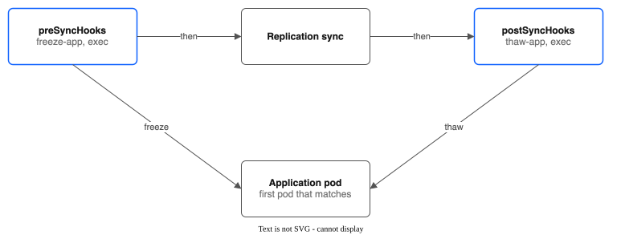

Part 3: Group Snapshots and Hooks¶
Tutorial Series: Index | Part 1: Pool Creation | Part 2: Snapshots & Clones | Part 3 | Part 4: Pool Configuration | Part 5: Golden Images | Part 6: Replication & Failover | Part 7: Monitoring | Part 8: Migration & Console | Part 9: COS Bucket for Backups
Group snapshots are not active (issue #100). The driver does not act on a
VolumeGroupSnapshotrecord. Nothing watches it, its hooks never run, and the CSI group snapshot service is not registered. Kubernetes' own group snapshot API cannot reach the driver. There is no plan to turn it on. The console does not show them.Because of this, this part has no hands-on steps for group snapshots. The old steps did nothing and are removed. What remains is what you can use today.
Cluster: ROKS eu-de (OpenShift Virtualization enabled)
What to use instead of group snapshots¶
| You want | Use |
|---|---|
| One snapshot of one volume | A VolumeSnapshot. See Part 2. |
| One moment for all disks of a running VM | An OpenShift VM snapshot. It freezes the guest first, and the driver copies all pool disks of the VM at one moment. See KNOWN-LIMITATIONS.md. |
| Instant VM disk snapshots | The KubeVirt Sidecar feature gate. See VM-INSTANT-SNAPSHOTS.md. |
| Several plain volumes at one moment | Stop or freeze the application, then snapshot each volume. A snapshot of a volume that is being written is not one point in time. |
A snapshot of a running VM does not need group snapshots. KubeVirt does not use them. The design notes are in VOLUME-GROUP-SNAPSHOTS.md and KNOWN-LIMITATIONS.md.
Hooks¶
A hook is a command or a web request that the driver runs before or after an operation. Use a hook to freeze an application before a copy and thaw it afterwards.
Hooks work today on a ReplicationPolicy, in spec.preSyncHooks and spec.postSyncHooks. They run before and after each replication sync. Part 6, Step 7 has a working example.
Hook types¶
| Type | Use Case | Configuration |
|---|---|---|
exec |
Run a command in an application pod (freeze, thaw, flush buffers) | podSelector, namespace, container (optional), command |
http |
Call an HTTP endpoint (backup coordinator, monitoring) | url (must start with http:// or https://), method (GET, POST or PUT; default POST), headers |
Every hook also has a name, a timeoutSeconds (default 30, minimum 1) and an onError value.
Example: freeze and thaw with exec hooks¶
spec:
preSyncHooks:
- name: freeze-app
type: exec
exec:
podSelector:
app: myapp
namespace: my-namespace
command: ["sh", "-c", "touch /data/frozen"]
timeoutSeconds: 30
onError: Abort
postSyncHooks:
- name: thaw-app
type: exec
exec:
podSelector:
app: myapp
namespace: my-namespace
command: ["sh", "-c", "rm -f /data/frozen"]
timeoutSeconds: 30
onError: Continue
The hook runs in the first pod that matches podSelector.

Hook error handling¶
onError |
Behavior |
|---|---|
Abort (default) |
A failed hook (timeout, non-2xx response, connection refused) stops the operation. Use it for a freeze that must work. |
Continue |
A failed hook is recorded and the operation goes on. Use it for notifications. |
What's Next¶
Explore pool configuration options:
- Part 4: Pool Configuration -- Multi-tier pools, allocation strategies, auto-expansion, and share draining
- Part 5: Golden Images -- Optional golden image provisioning for KubeVirt (hidden in the console)
- Part 6: Replication & Failover -- Cross-region DR with direct NFS and driver-to-driver modes
- Part 7: Monitoring -- Prometheus metrics, alerts, and Grafana dashboards
- Part 8: Migration & Console -- PVC migration tool and OpenShift console plugin
- Part 9: COS Bucket for Backups -- Locked COS bucket, a restricted key, and a CBR rule